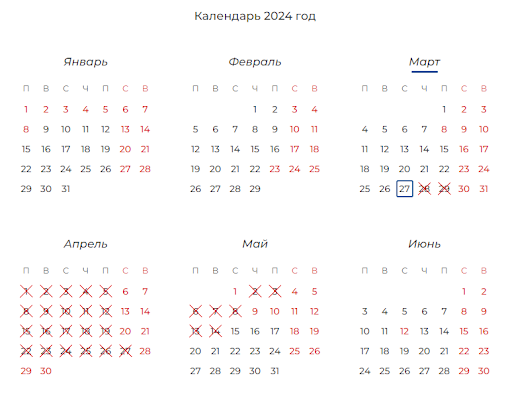

{% extends 'base.html' %} {% block title %} Результат {% endblock %} {% block
body %}
Результат
{% if result == 0 %}
Вы ВПРАВЕ обратиться
с заявлением о признании банкротом
только в СУД
(при доказательстве НЕПЛАТЕЖЕСПОСОБНОСТИ и НЕДОСТАТОЧНОСТИ имущества)
{% elif result == 1 %}
Вы можете подать заявление в СУД, но,
скорее всего, Вам откажут в удовлетворении требований.
Также Вы имеет право обратиться в МФЦ при соблюдении
условий.
Вы можете претендовать на банкротство в судебном порядке только при
доказательстве НЕПЛАТЕЖЕСПОСОБНОСТИ и НЕДОСТАТОЧНОСТИ имущества.
{% elif result == 2 %}
Вы имеете ПРАВО обратиться либо в СУД,
либо в МФЦ,
по Вашему усмотрению.
(для МФЦ - дописать дополнительные для этого условия из Ст. 223.2)
{% elif result == 3 %}
Вы можете подать заявление в СУД, но,
скорее всего, Вам откажут в удовлетворении требований.
Вы можете претендовать на банкротство в судебном порядке только при
доказательстве НЕПЛАТЕЖЕСПОСОБНОСТИ и НЕДОСТАТОЧНОСТИ имущества.
{% elif result == 4 %}
Вы ОБЯЗАНЫ обратиться в СУД.
У Вас есть на это 30 дней
С какого момента следует считать 30 дней, предоставляемых для обращения в суд, если Вы обязаны обратиться в суд?
По
закону
Гражданин обязан обратиться в арбитражный суд с заявлением о признании его банкротом не позднее 30 рабочих дней со дня,
когда он узнал или должен был узнать о том, что выплата долга одному гражданину (организации) повлечет невозможность выплаты второму.
При этом общий долг превышает 500 тысяч рублей
ОБРАТИТЕ ВНИМАНИЕ!
Считаются только рабочие дни, куда не входят выходные (суббота и воскресенье) и нерабочие праздничные дни.
Учитывайте это при расчете срока.
Течение срока начинается на следующий день после календарной даты или наступления события, которыми определено начало этого срока.
То есть, если Вы узнали или должны были узнать об обязанности обратиться в суд с заявлением о банкротстве 27 марта,
то 30-дневный срок начинает течь с 28 марта. Таким образом, крайний рабочий день для подачи заявления в суд – 14 мая (см. календарь ниже).

С расчетом Вам поможет специальный сервис
«Калькулятор»
Что будет, если не выполнить обязанность и не подать заявление в суд в течение 30 дней?
За неисполнение гражданином обязанности по подаче заявления о признании его банкротом в арбитражный суд предусмотрена административная ответственность:
налоговые органы имеют право наложить административный штраф в размере от 1000 до 3000 рублей.
Если Вы решите повторно не подать заявление в суд, есть риск получить ещё один штраф – от 3000 до 5000 рублей.
{% endif %}
В какой суд нужно обращаться с заявлением о признании банкротом?
По
закону
гражданин обращается с заявлением о банкротстве в арбитражный суд по месту
жительства – это арбитражный суд Вашего региона (области, республики, края,
автономной области, автономного округа, города федерального значения).
Местом жительства признается место Вашей постоянной регистрации на
территории Российской Федерации.
Узнать
суд, его адрес, сайт и контактный телефон.
{% endblock %}